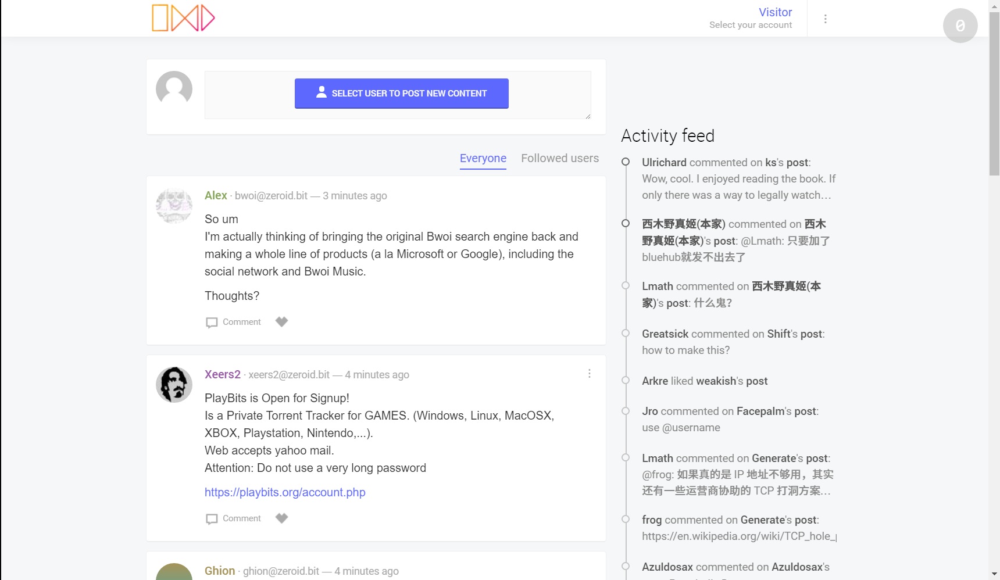

Sample ZeroNet sites
ZeroHello
The homepage of ZeroNet
- Lists all added sites: Title, Peer number, Modification date
- Site actions: Update, Pause, Resume, Delete
- Clone sites to have your own blog / forum
- If new version available update ZeroNet with one click

Address: 1HeLLo4uzjaLetFx6NH3PMwFP3qbRbTf3D
ZeroBoard
Simple message board demo for dynamic content distribution
- Dynamic avatars generated by user auth_key
- Real time message updates
How does it work?
- You send your message to site's private key owner bot
- The bot modify the
message.jsonfile, signs it using the private key and publish to other peers - If the site modification reaches your client the message will appear to your browser

Address: 1Gfey7wVXXg1rxk751TBTxLJwhddDNfcdp
ZeroBlog
Self publishing blog demo
- Inline content editor
- Markdown syntax
- Code syntax highlighting
- Site signing & publishing using only the web interface
How does it work?
- You can edit the
data.jsonfile using the web interface - By pressing
Sign & Publish new contentbutton it asks for the site private key (its displayed when you creating a new site using zeronet.py siteCreate command) - Your ZeroNet client signs the new, modified files and publish directly to other peers
- You site will be accessible until at least 1 peer (visitor) computer is active

Address: 1BLogC9LN4oPDcruNz3qo1ysa133E9AGg8 or blog.zeronetwork.bit
ZeroTalk
Decentralized, P2P forum demo
- Topic and message create, modify, delete
- Topic and message upvoting
- Only have to contact the site owner once, when requesting modifications permissions to site
- Commenting and content modifications pushed directly to other peers
- Only you can sign and modify your own files
- Real time display of new comments
How does it work?
- To interact with the site you have to request a certificate of registration (a cryptographic sign) from a ZeroID provider
- After you have the certificate you can publish your content (messages, topics, upvotes) directly to other peers

Address: 1TaLkFrMwvbNsooF4ioKAY9EuxTBTjipT or talk.zeronetwork.bit
ZeroMail
End-to-end encrypted, distributed, P2P messaging site. To improve privacy it uses a BitMessage-like solution and will not expose the message recipient.
- Using ECIES for secret exchange, AES256 for message encoding
- When you first visit the site it adds your public key to your data file and after that anyone is able to send a message to you
- Everyone tries to decrypt every message, this improves privacy by making it impossible to find the message recipient
- To reduce per message overhead and increase decryption speed we re-use the AES key, but a new IV is generated every time

Address: 1MaiL5gfBM1cyb4a8e3iiL8L5gXmoAJu27 or mail.zeronetwork.bit
ZeroChat
The finished site for the tutorial of creating a server-less, SQL backed, real-time updated P2P chat application using ZeroNet in less than 100 lines of code
- Selecting ZeroID certificate
- Storing messages in a SQL database
- Creating own messages and distribute directly to other users in real-time
- Real-time update the messages as they arrive

Address of finished site: 1AvF5TpcaamRNtqvN1cnDEWzNmUtD47Npg
Tutorial on ZeroBlog: Part1, Part2
ZeroMe
Decentralized, Twitter-like P2P social network.
- Store user information in ZeroMe user registry
- Store post and comment in MergeSite called Hub
- Upload images as optional files
- Real time of display activity feed

Address: 1MeFqFfFFGQfa1J3gJyYYUvb5Lksczq7nH
ReactionGIFs
Demo for optional files, the video files only download if your browser requests them.

Address: 1Gif7PqWTzVWDQ42Mo7np3zXmGAo3DXc7h